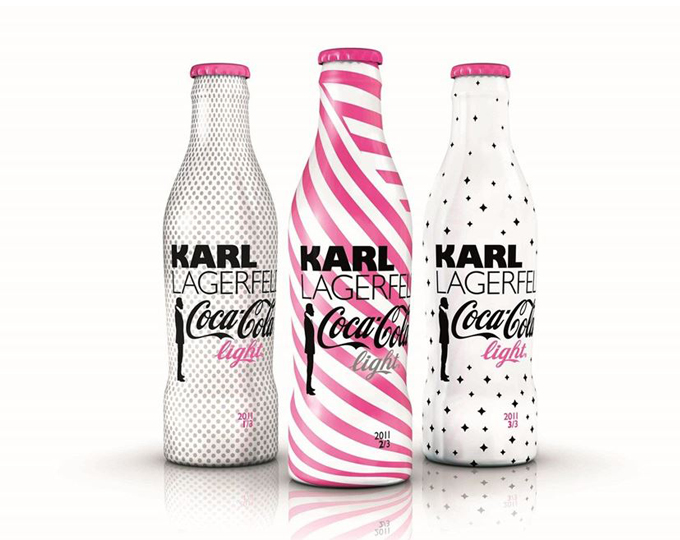

홈 > 브랜드 매거진 > 코카-콜라
코카-콜라 Coca-Cola
코카-콜라는 음료의 맛보다 함께 마시는 순간의 감정을 브랜드 자산으로 축적해 왔다. 병의 형태, 색, 광고 언어, 공유의 장면이 반복되면서 제품은 탄산음료를 넘어 친숙함과 즐거움의 상징이 된다.
산업 분야 식음료 · 공개 등급 매거진 완성 · 브랜드 평가 5 ★


한눈에 보는 브랜드
코카-콜라는 음료의 맛보다 함께 마시는 순간의 감정을 브랜드 자산으로 축적해 왔다. 병의 형태, 색, 광고 언어, 공유의 장면이 반복되면서 제품은 탄산음료를 넘어 친숙함과 즐거움의 상징이 된다.
브랜드 관점
코카-콜라는 음료의 맛보다 함께 마시는 순간의 감정을 브랜드 자산으로 축적해 왔다. 병의 형태, 색, 광고 언어, 공유의 장면이 반복되면서 제품은 탄산음료를 넘어 친숙함과 즐거움의 상징이 된다.
시작과 성장
코카-콜라(Coca-Cola)는 1886년 탄생한 미국의 청량음료 브랜드이다. 약국을 운영하던 존 펨버턴 박사가 코카-콜라를 개발했고, 미국의 역사를 함께하며 성장해나갔다.
130여년의 역사를 가지고 있는 코카-콜라는 현재 200여 개국에서 판매되고 있으며 전 세계적으로 사랑받고 있다.
브랜드 아이덴티티
코카-콜라는 130여년 동안 시대의 흐름에 맞춰 변화했다. 특히, 동시대 소비자들이 공감할 수 있는 슬로건을 사용하여 코카-콜라의 브랜드 가치를 쌓아왔다.
또한, 코카-콜라의 상징적인 병 디자인은 예술적 가치를 인정받아 전 세계적으로 사랑받고 있다. 코카-콜라 컴퍼니는 1969년 이래로 환경보존 및 지역사회 활성화를 위해 힘쓰고 있다.
1984년에 '코카-콜라 재단(Coca-Cola Foundation)'을 설립하였으며, 여성 인권, 수자원 및 환경 보존, 지역 커뮤니티 지원 등 다양한 분야에서 다양한 활동을 펼치고 있다.
제품과 서비스
대표 제품은 1886년 출시된 코카-콜라 오리지널이며, 무설탕·무칼로리 라인인 코카-콜라 제로 슈거가 핵심 성장 축이다. 미국 시장에서는 다이어트 코크, 코카-콜라 체리, 코카-콜라 바닐라, 카페인 프리 등 변형이 판매되고, 체리 라인은 코카-콜라 체리·제로 슈거 체리·체리 플로트·다이어트 코크 체리로 확장되었다.
한국에서는 코카-콜라 오리지널과 함께 코카-콜라 제로, 코카-콜라 제로 레몬, 코카-콜라 제로 체리, 코카-콜라 제로제로가 판매되며, 모기업이 스프라이트, 환타, 미닛메이드, 파워에이드, 조지아, 토레타, 글라소 비타민워터 등 여러 음료 브랜드를 함께 운영한다.
타임라인
BI/CI 변천사
자주 묻는 질문
코카-콜라의 브랜드 아이덴티티는 무엇인가요?
코카-콜라는 130여년 동안 시대의 흐름에 맞춰 변화했다.
코카-콜라의 대표 제품은 무엇인가요?
대표 제품은 1886년 출시된 코카-콜라 오리지널이며, 무설탕·무칼로리 라인인 코카-콜라 제로 슈거가 핵심 성장 축이다.
코카-콜라는 어느 기업이 소유하고 있나요?
공식 웹사이트: https://cocacola.com.br; 국가: 미국; 소유자: 코카콜라 컴퍼니; 산업: 식음료